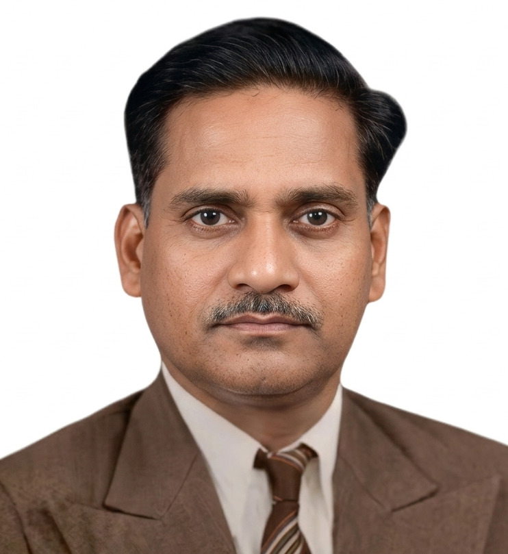

Profile at a Glance
Qualification
G.M.V.C., B.V.Sc., M.S.
Position
Professor and Head,
Department of Meat Hygiene;
Former Associate Dean,
Madras Veterinary College
Area of Contribution
Meat Hygiene
Dr. M. Ranganathan
G.M.V.C., B.V.Sc., M.S.
Former Associate Dean
Madras Veterinary College
Early Life and Career
Dr. M. Ranganathan was born on 10 August 1921. He graduated from Madras Veterinary College in 1944.
He began his career as a Veterinary Assistant Surgeon (VAS) in Thiruvannamalai and subsequently joined the faculty of the Department of Preventive Medicine, Madras Veterinary College.
Clinician and Radiologist
Dr. Ranganathan was also an expert radiologist, and his services as a clinician were highly appreciated.
Dr. Srinivasan, a medical doctor, was impressed by the quality of treatment provided to his pet and made a substantial contribution to Madras Veterinary College. This contribution enabled the college to organise the Dr. Srinivasan Memorial Lecture annually.
Establishment of the Department of Meat Hygiene
Dr. M. Ranganathan was deputed to pursue his M.S. in Meat Hygiene at the University of Tennessee, United States of America, in 1960.
On his return to India, he established the Department of Meat Hygiene at Madras Veterinary College, the first standalone Meat Hygiene department in a veterinary college in the country.
He became its Professor and Head on 22 February 1962.
The foundation stone for the present building of the department, the Dr. A. L. Mudaliar Block, was laid during his tenure on 7 September 1964.
The building, including a modern slaughter unit, was commissioned on 29 February 1972.
Contribution to Postgraduate Education
As many as 23 research scholars guided by Dr. Ranganathan successfully completed their M.V.Sc. in the subject of Milk and Meat Hygiene Main.
Associate Dean and Administrator
Dr. Ranganathan became Associate Dean of Madras Veterinary College in the early 1970s.
He was a disciplinarian, known for his simplicity, punctuality and strict adherence to rules in administration.
Contribution to the Tamil Nadu Meat Corporation
Dr. Ranganathan gave the concept note for establishing the Tamil Nadu Meat Corporation and assumed additional charge as its Special Officer in 1974.
He prepared the layout plan and Detailed Project Report (DPR) for establishing a modern abattoir for Chennai city as early as 1976.
Retirement and Later Years
Dr. Ranganathan retired from service on 31 August 1976 at the age of 55 years.
He later passed away peacefully at Kilpauk on 4 June 2012.
A Family Legacy in Veterinary Science
Dr. Ranganathan's family also made notable contributions to veterinary science education and research.
His brother, Dr. M. Ganesamurthi, known for his work on duck plague vaccine, and his son, Dr. R. Vijayakumar, who contributed to the field of Animal Nutrition, also served the cause of veterinary science.
A Legacy of Discipline, Education and Innovation
Dr. M. Ranganathan's career reflected a distinctive combination of clinical expertise, academic leadership, postgraduate training, institutional development and public service.
His pioneering role in establishing the Department of Meat Hygiene, his contribution to postgraduate education, and his efforts towards modern meat processing and abattoir development remain important landmarks in the history of veterinary education and public service.
Source material provided for the TTPA Reminiscence of Dedicated Stalwarts archive.
Audio narration will be added here when available.
Additional historical photographs will be added here.